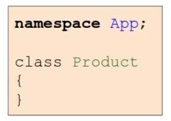
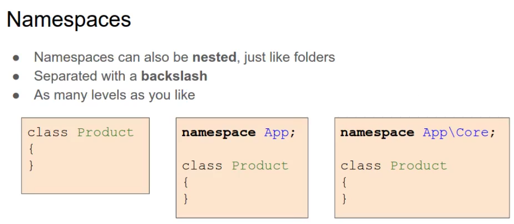
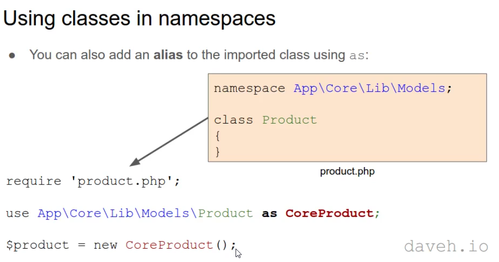
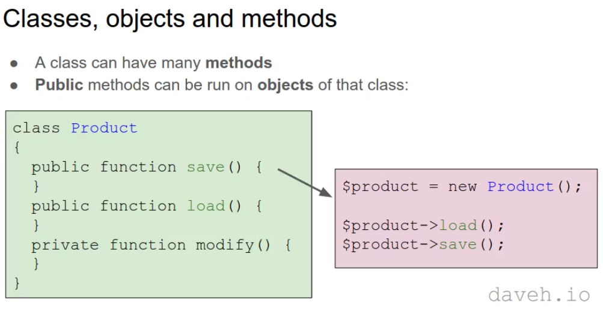
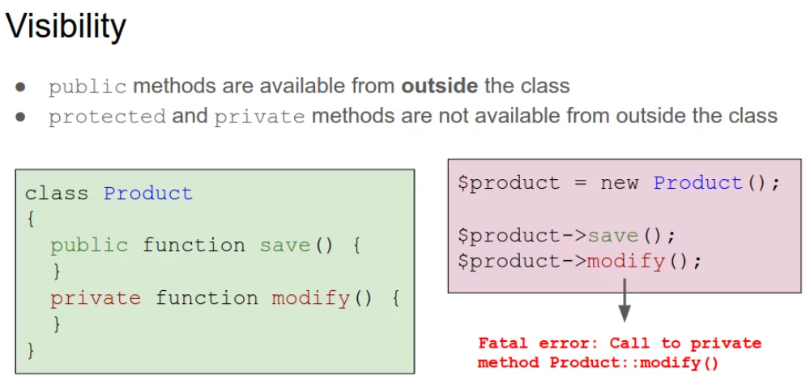
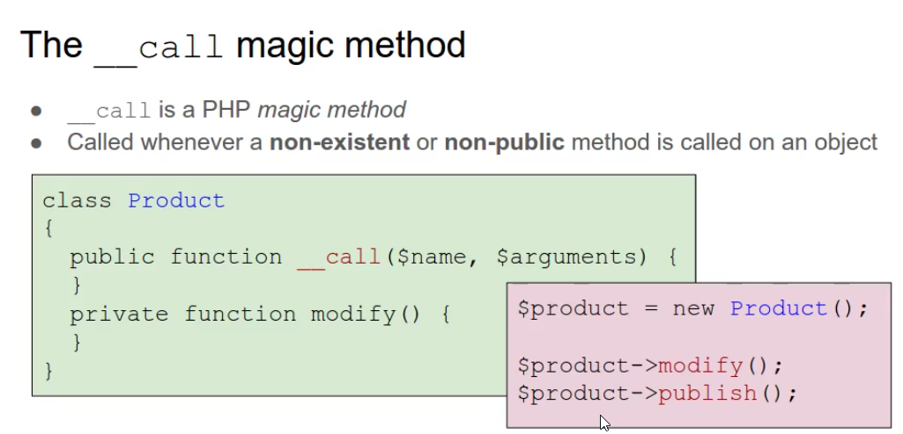

Controllers and actions
-->Controllers are Classes
-->They contain methods that are the actions

---------------------------------------------------------
How to create objects and run methods dynamically
1-To create a new object:
$post = new Post();
2-To create an object based on a variable:
$class_name = "Post";
$post = new $class_name();
Dynamically calling methods:
ex:
class Post{
public function save(){
......
}
}
1-To call a method:
$post = new Post();
$post->save();
2-To call a method based on a variable:
$method = "save";
$post->$method();
Passing parameters
ex:
class Post{
public function save($arg1,$arg2){
.......
}
}
-->To call a method and pass parameters to it:
$post = new Post();
call_user_func_array([$post, "save"], [123,"abc"]);
Error handling
-->To check if the class exists before creating and object:
$class_name = "Post";
if(class_exists($class_name)){
$post = new $class_name();
}
-->To check the method exists, and is public before calling it:
$post = new Post();
$method = "save";
if(is_callable([$post,$method])){
$post->$method();
}
---------------------------------------------------------
Dispatch the route: create the controller object and run the action method
Dispatching
-->Routing = asking for directions
-->Dispatching = following those directions
-->The dispatching step is going to create a controller object and run the action method


---------------------------------------------------------
How to better organise your classes by using namespaces


Namespaces
1-A namespace is like a folder or directory
2-Defined with the namespace keyword
3-Allows you to have two(or more) classes with the same name
4-The name can be anything you like





----------------------------------------------------------
Class autoloading
-->load classes automatically without having to require them
Class files
-->it's common(and good) practice to define each class in a separate file:


-->Instead of doing this, PHP can load class files automatically, on demand, we can do this by adding on autoload function


The autoload function
-->To add an autoload function, use spl_autoload_register, passing in a function that will run when the autoloader is needed:
spl_autoload_register(function($className){
require "$className.php";
});


----------------------------------------------------------
Adding the autoload function
1-we want to require class files relative to the root of the site
2-Front controller(index.php) is in the public folder
3-The root folder is the parent directory of the public folder

----------------------------------------------------------
Remove query string variables from the URL before matching to a route


-->once we removing query string we can match routes
----------------------------------------------------------
Pass route parameters from the route to all controllers

-->to be able to access this variables(id) in the controller we need to pass them in controller object
-->as we pass these variables into every controller, we will build Base Controller to do this as all controllers inherit from it

----------------------------------------------------------
The __call magic method: how to call inaccessible methods in a class



-->in these cases(modify(),publish()) __call will be executed and it won't be any errors, it similar to autoload function

----------------------------------------------------------
Actions filters: call a method before and after every action in a controller
Controller actions
-->A controller can have many actions:
-->Actions will generally:
1-write out content(HTML)
2-redirect to another action
etc
How to execute some code before or after every action?
For example:
1-Checking that the user has logged in
2-Writing a message to a log
3-Setting the language, etc
-->This functionality is present in most popular MVC frameworks
Filtering actions
-->__call is executed for a non-existent or non-public method call
-->By executing __call first, we can run code before and after a method:
class Posts{
public function __call($name, $args){
//run code before
call_user_func_array([$this, $name], $args);//running a method
//run code after
}
}
So how we can use __call before running method itself??
1-make the action methods private
2-add a suffix to the method name

-->so when we call index method for example, it wouldn't exist of that name so __call magic method will be called, this option a lot of frameworks go with

---------------------------------------------------------
Organise controllers subdirectories: add a route namespace option

-->We have namespace to allow autoload function work, we don't have to explit require a files with controller classes in them

But what if we want to organise our controllers in subdirectories like(admin), at the moment in our router this wouldn't work because we have $controller = "App\controllers\\$controller";
hardcoded in dispatch method so solution is:
Routes with namespaces:
-->Option to specify the namespace in the route
-->Defaults to App\Controllers if not specified